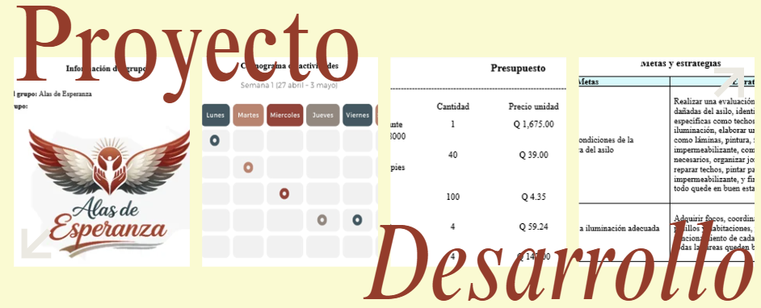
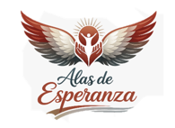

Proyecto de trabajo creativo en grupos
Este es un Proyecto de trabajo creativo en grupos, consiste en diseñar de forma creativa y organizada una solución para ayudar a un grupo de personas con alguna necesidad, aplicando los conocimientos del curso de Desarrollo Humano.
Se realiza en equipo, imaginando un problema social sin ir al lugar real, analizándolo y
proponiendo una solución escrita que utilice diferentes tipos de pensamiento, además de planificar todo el proceso y
administrar un presupuesto de Q25,000 con su respectivo registro de gastos, con el objetivo de contribuir al bienestar de una comunidad de manera
responsable y estructurada.
El objetivo es crear un proyecto que permita apoyar a un asilo de ancianos, atendiendo sus necesidades mediante la aplicación de habilidades de creatividad, organización y trabajo en equipo desarrolladas en el curso de desarrollo humano y Profesional.
Para la realización del proyecto se llevaron a cabo los siguientes pasos: se eligió un nombre acorde al enfoque del proyecto en nuestro caso fue Intervención Solidaria en Asilo Hogar de la Felicidad , se redactaron la misión y visión del grupo, se diseñó un logotipo representativo, se organizó una directiva de trabajo, se identificó una necesidad en una institución o comunidad específica que en nuestro caso fe problemas de humedad a causa de las lluvias, se elaboró un documento formal que incluía introducción, objetivo general y objetivos específicos, así como la justificación del proyecto, además, se establecieron metas y estrategias, se elaboró un presupuesto de Q25,000 con el que compramos elementos para mejorar la infraestructura y también alimentos, se incluyeron comentarios personales y una reflexión final, y finalmente se realizó una evaluación del trabajo en grupo.

